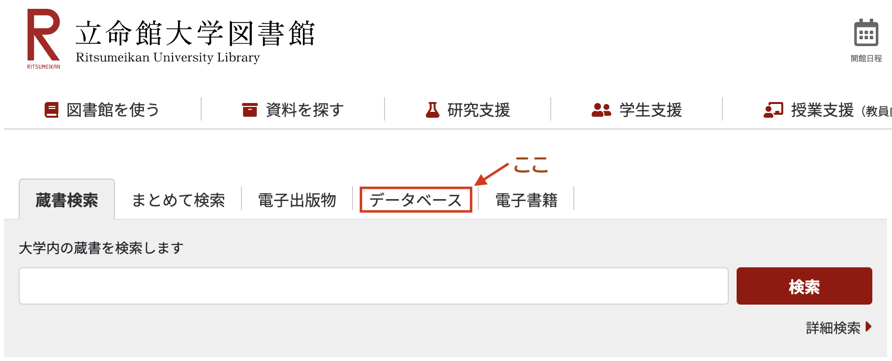
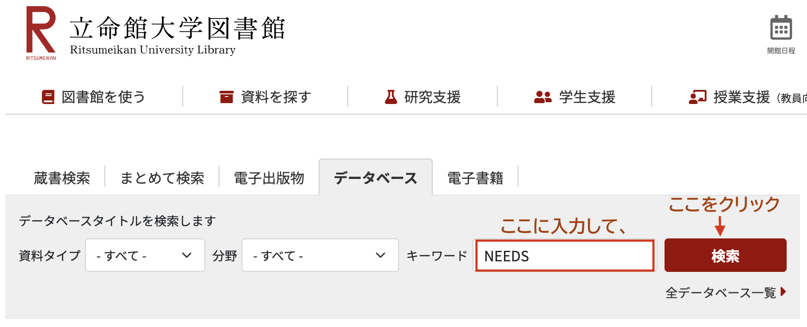
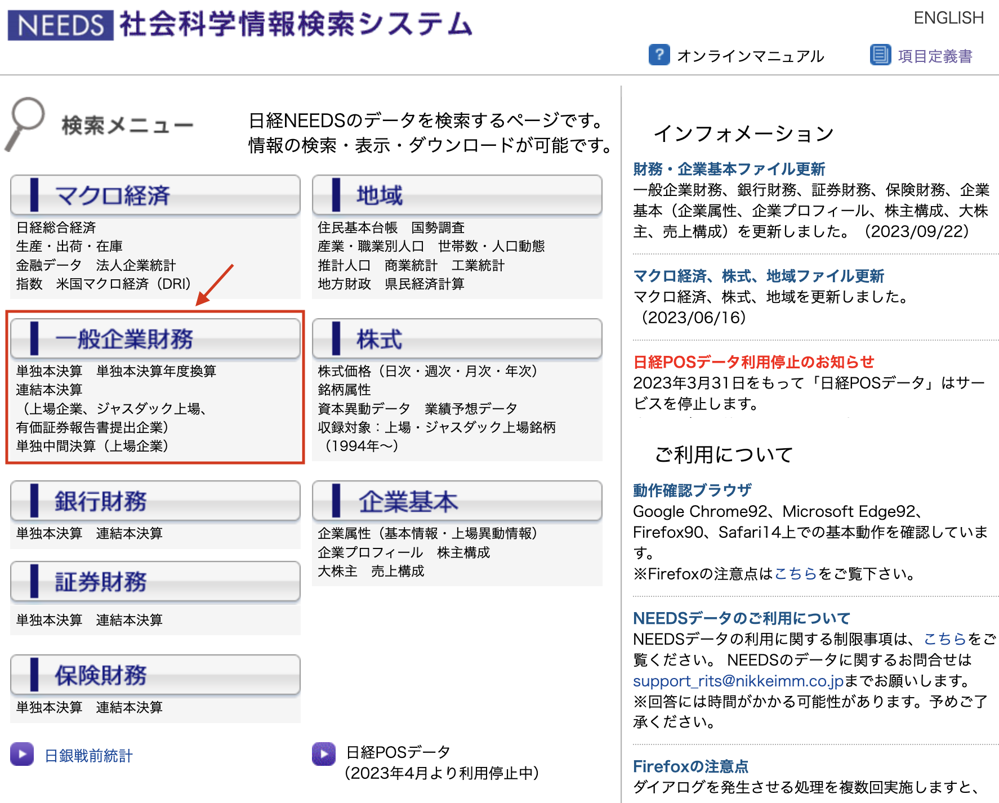
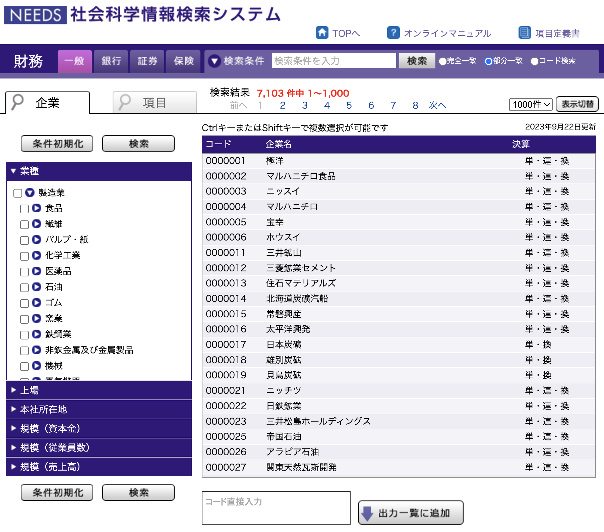
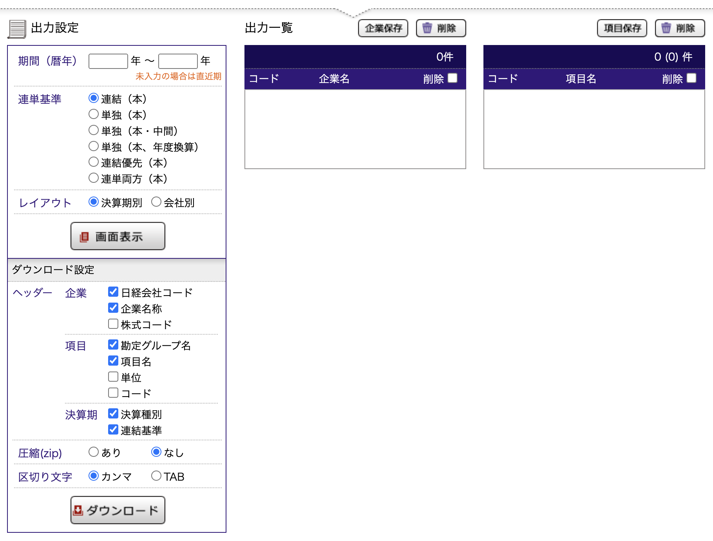
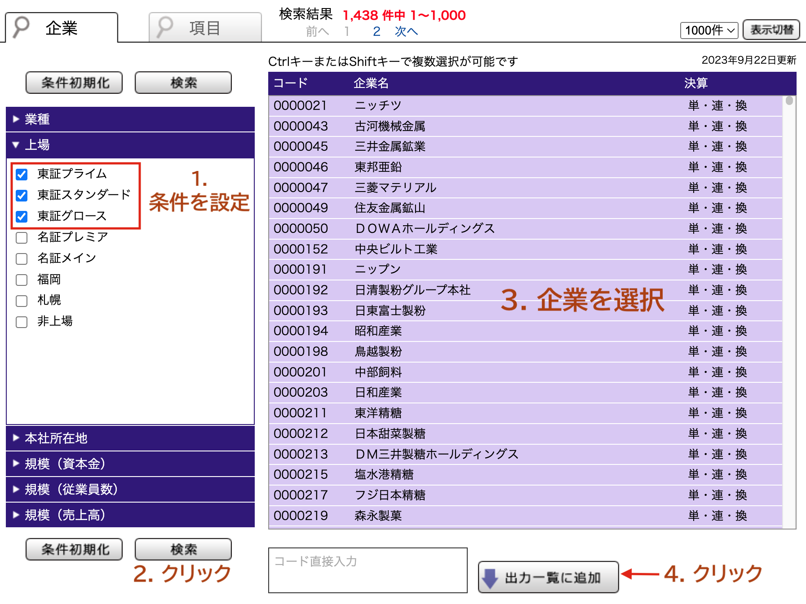
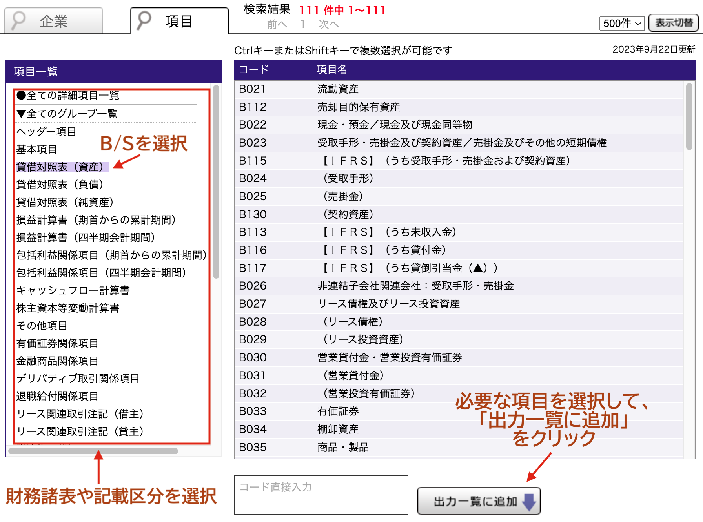
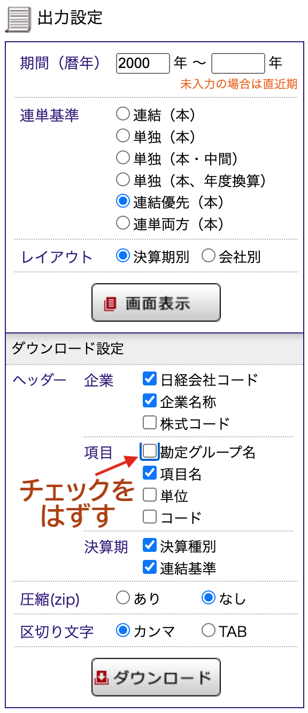
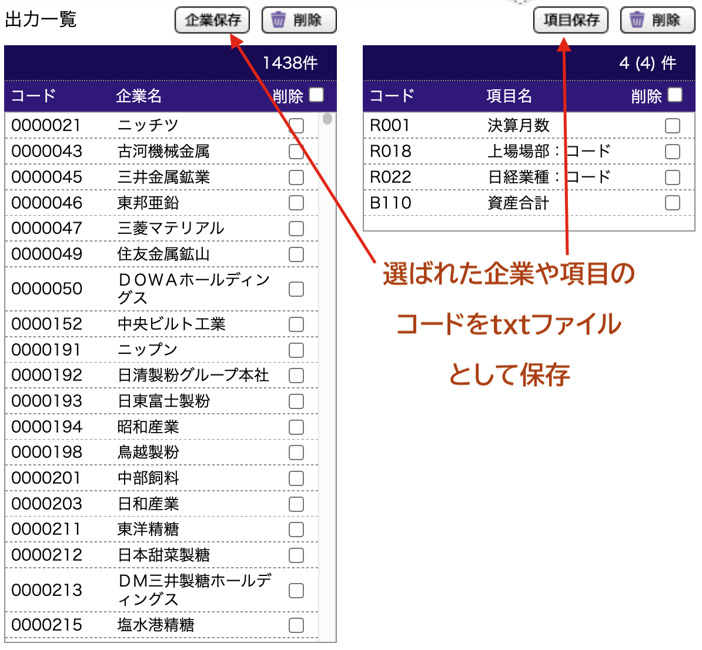
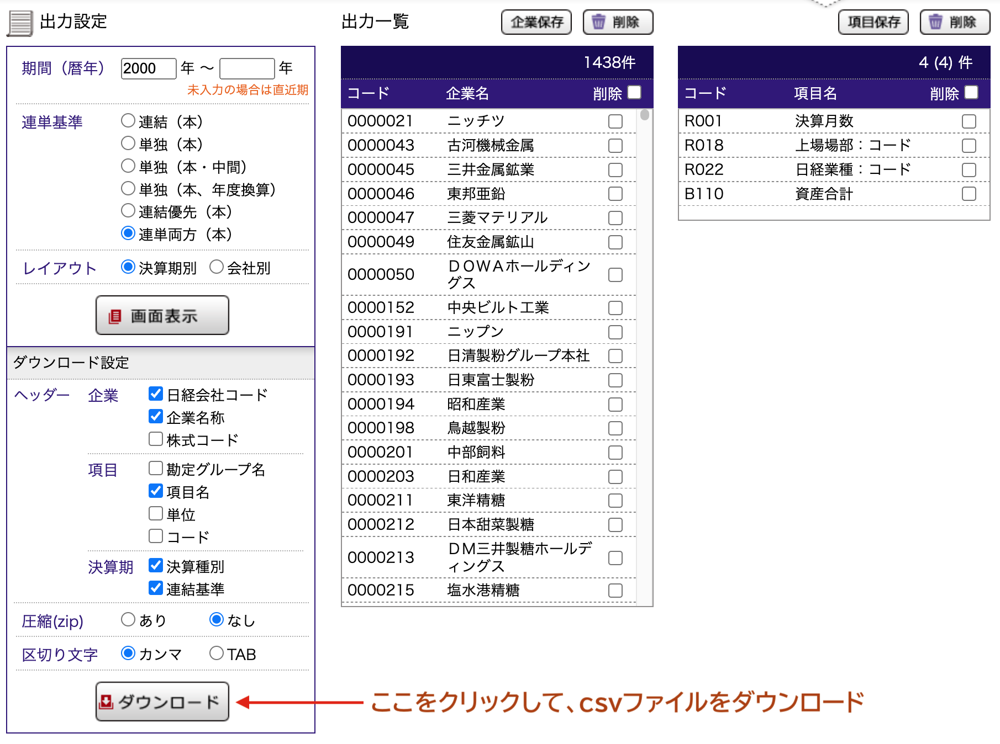

9 日経NEEDSの使い方
- 学外からはVPN接続でアクセスしよう
- 日経NEEDS社会科学情報検索システムを使い倒そう
- 選択した企業と項目は保存しておこう
- ダウンロードしたcsvファイルをMS Excelで開かないようにしよう。
MS Excelなどの表計算アプリケーションは、csvファイルを勝手に書き換えたりするので、csvファイルを開くときは、必ずVS Codeなどのテキストエディタで開くようにしましょう。
9.1 はじめに
ここまで第1部で学習した知識を使って，実際の分析に利用する日経MMが提供しているデータベース日経NEEDSデータを処理してみましょう。 立命館大学が契約している日経NEEDSデータベースからは、
- 会計データ
- 株価データ
- 為替データ
- 物価指数等のマクロデータ
- POSデータ (2024年4月から利用可能)
を入手することができます。 これらのデータベースから、大規模なデータを入手し、経済や経営に関するデータ分析を行うことができます。 ここでは、日経NEEDSを使って、会計データを入手する方法を説明します。
立命館大学が契約している日経NEEDSはアクセス数に制限のない『社会科学情報検索システム」というものであり，Financial Questとは別物です。FQとは違い，社会科学情報検索システムはMacからでも利用できる半面，自動化ができないので，ちょっと面倒です。
9.2 日経NEEDSへのアクセス方法
立命館大学図書館のウェブサイトに行きます。 もし大学外からアクセスしている場合は，VPNを経由して図書館のウェブサイトにアクセスするようにしましょう。
トップページに行くと、サイトの上部に「データベース」という項目があります。

ここをクリックすると、データベースの検索窓が出るので、ここにNEEDSと入力して、検索をクリックします。

すると、検索結果に「日経NEEDS」が出てくるので、それをクリックします。ここで注意しなければならないのは、日経NEEDSを利用することができるのは、
- 大学ネットワークに接続しているか、
- VPN接続しているか、
のどちらかの状態だけです。
VPN(Virtual Private Network)とは、インターネットを利用して、遠隔地にあるネットワークと安全に通信するための仕組みです。立命館大学では、学外から学内のネットワークに接続する際にVPNを利用することで、安全に通信することができます。 くわしくは、VPNの利用についてを参照してください。
大学のネットワークに接続していない場合は、VPN接続をしてください。 大学ネットワークかVPNに接続した状態で、日経NEEDSをクリックすると、日経NEEDSのトップページが表示されます。
9.3 日経NEEDSの使い方
これが日経NEEDS社会科学情報検索システムのトップページです。 右上にオンラインマニュアルや項目定義書もあるので、分からないことがあれば参照してください。
今回は、会計データを入手するため「一般企業財務」をクリックします。

もし株価データが欲しいなら、「株式」、為替データなどマクロデータが欲しいなら「マクロ経済」をクリックします。
日経NEEDS社会科学情報検索システムの「一般企業財務」のトップページは以下のように、上下2つのパートで構成されています。
 
上のパートは、企業や財務項目を選択する場所です。 左上のタグに「企業」と「項目」があり、「企業」タグでサンプルとしたい企業を選択し、「項目」タグで入手したい財務項目を選択します。
9.3.1 企業タブ
企業タブでは、分析対象となる企業を選択します。 左側の項目で、
- 業種
- 上場
- 本社所在地
- 規模（資本金）
- 規模（従業員数）
- 規模（売上高）
を指定すると、対象となる企業リストが右側に表示されます。 たとえば、
- 業種は、製造業
- 上場は、東証プライム、東証スタンダード、東証グロース
を指定すると、2024年1月28日現在では、1438件の企業がヒットします。 そして右側に出てきた企業名を選択し、「出力一覧に追加」をクリックします。

企業の抽出が終わったら、つぎは「項目」タグを押して、入手したい財務項目を選択します。
9.3.2 項目選択
「項目」タブは、選択した企業や財務項目に対して、データ入手期間や、入手するデータの種類を選択する場所です。
「項目一覧」から入手したい財務項目が記載されている財務諸表や区分を選択します。 たとえば、「貸借対照表（資産）」を選択すると、右側に「貸借対照表（資産）」の区分から入手可能な項目のリストが表示されます。 その中で必要な項目を選択し、「出力一覧に追加」をクリックすると、選択した項目が下の「出力一覧」に表示されます。
データを取得する際に、必ず入手しておいた方がよい項目は、
R001決算月数R018上場場部：コードR022日経業種：コード
の3つです。 変則決算で決算月数が12でない企業-年度(firm-year)はサンプルから除外することが多いため、決算月数は必要です。 あとは上場場を変更した企業も把握したいことが多いため、上場場部コードも必要です。 あとは、年度と産業で固定効果を入れた回帰モデルを構築することが多いため、日経業種コードも必要です。

全上場企業に対して，非常に多くの財務項目を，非常に長い期間にわたって入手しようとすると，日経NEEDSのサーバーに負荷がかかり，アクセスが遮断されることがあります。 適正な利用を心がけましょう。
9.4 出力設定
上のパートで企業と項目を選択したら、次の下パートの「出力設定」で、データの入手期間や、データの種類を選択します。 左側の項目で、サンプルの期間や、決算の種類、レイアウトを選択します。
9.4.1 期間（暦年）
ここでは、データの入手期間を指定します。 開始期間と終了期間を指定することができます。 開始期間だけを指定して、終了期間を指定しないと、開始期間から最新の期間までのデータを取得するため、特にこだわりが無ければ、開始期間だけを指定しておきましょう。
9.4.2 連単基準
連単基準では、次の項目が選択できます。
- 連結（本）：本決算の連結財務諸表を取得
- 単独（本）：本決算の個別財務諸表を取得
- 単独（本・中間）：本決算と中間決算の個別財務諸表を取得
- 単独（本、年度換算）：本決算の個別財務諸表を取得し、年度換算を行う
- 連結優先（本）：一決算期に複数の基準のレコードがある場合、以下の優先順位に基づいて1レコードを表示出力
- 連結（国際会計基準）
- 連結（米国会計基準）
- 連結（日本基準）
- 単独
- 連単両方（本）：本決算の連結と個別財務諸表を取得
よく使うのは、連結（本）と連結優先（本）です。 IFRS採用企業や米国基準採用企業の項目を取得したい場合は、連結優先（本）を選択しておくと、日本基準とデータが重複しないので、便利です。
「ダウンロード設定」の項目ではヘッダーに含める変数を選択します。 ここで、項目の「勘定グループ名」のチェックは外しておきましょう。 無駄に変数名が長くなることを防げます。 あとはそのままで大丈夫です。
9.4.3 レイアウト
レイアウトでは、データの並び順を指定します。 特に重要ではないので、そのままで大丈夫です。

9.5 企業と項目の保存
日経NEEDS Financial Questとは違い、日経NEEDS社会科学情報検索システムでは、作業を自動化することができないため、上で行ったような選択の結果、抽出されている企業と項目を保存しておくことをおすすめします。

9.6 データの入手
今までの作業で、企業と項目の選択が終わり、データの入手期間や連結単体の選択が終わったら、あとはデータをcsvファイルとしてダウンロードするだけです。

最後に、大事なことなのでもう一度いいます。 ダウンロードしたcsvファイルをMS Excelで開かないようにしよう。